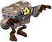
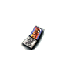
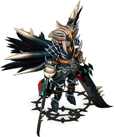

- 阿修羅的技能/魔法詳細解說請看這裡
- 可同時使用的技能/魔法及能力提升道具的解說請看這裡
- 延遲0的魔法/技能，使用混合藥水時可以連射。
- 延遲0.5秒的魔法/技能，併用吟的戰鬥之歌與混合藥水就能連射。
提供情報或編輯請求，請到情報提供公佈欄、編輯公佈欄。
攻擊-遠距離
| 名稱 | 習得條件 | 消耗 | 延遲 | 取得途徑 |
| 阿克艾提斯 |  Lv55 Lv55 | MP:20 | 1秒 |  亞茲魔、神祕拼圖碎片 亞茲魔、神祕拼圖碎片 |
| 效果 | 朝對象釋放衝擊波屬性:風基本攻擊力:取決於INT |
| 十字攻擊 | Lv60 | MP:200 | 3秒 | 艾尼斯特米 |
| 效果 | 朝敵人發射十字劍氣。敵人可能陷入出血狀態。屬性:無基本攻擊力:取決於INT |
| 尤蘭艾蒂斯 | Lv71 | MP:50 | 1秒 | 恐怖的掛鐘、神祕拼圖碎片 |
| 效果 | 朝對象釋放2道衝擊波屬性:風基本攻擊力:取決於INT |
| 卡普蘭艾蒂斯 | Lv95 | MP:120 | 1秒 | [阿波莉娜] |
| 效果 | 朝對象釋放3道巨大的衝擊波屬性:風基本攻擊力:取決於INT |
| 圖林塔艾提斯 | Lv100,FLv70 | MP:150 | 1秒 |
連續朝對象釋放混入沙之刃的衝擊波屬性:風基本攻擊力:取決於INT
攻擊-近距離
| 名稱 | 習得條件 | 消耗 | 延遲 | 取得途徑 |
| 克萊茲 | Lv5 | SP:6 | 0 | NPC:魔界村神官 |
| 效果 | 發出灌注力量的一擊基本攻擊力:35 |
| 克里斯克萊茲 | Lv11 | SP:9 | 0 |  什麼都有彩券 什麼都有彩券 |
| 效果 | 阿修羅基本攻擊的架式基本攻擊力:？ |
| 費爾克萊茲 | Lv21 | SP:13 | 0 | NPC:魔界村神官、藍色木芥子、神祕拼圖碎片 |
| 效果 | 技能等級習得條件:克萊茲SLv10灌注力量，發出迅速的突刺基本攻擊力:100 |
| 丘歐克萊茲 | Lv41 | SP:21 | 0 | NPC:魔界村神官、 安迪爾斯獨眼怪、什麼都有彩券 安迪爾斯獨眼怪、什麼都有彩券 |
| 效果 | 技能等級習得條件:菲亞克萊茲SLv23發出鋒利到足以貫穿對手防禦的突刺基本攻擊力:165恐怕沒有等級制的掉落 |
| 跟隨戴爾 | Lv51 | SP:29 | 0 | Q:轉職時支給 |
| 效果 | 使用雙劍發出斬擊基本攻擊力:235 |
| 提納因戴爾 | Lv65 | SP:35 | 0 | NPC:魔界村神官、 惡魔僵屍、 惡魔僵屍、 藍色寶箱怪 |
| 效果 | 技能等級習得條件:丘歐克萊茲SLv35灌注風之力，用雙劍朝前方3個方向發出斬擊基本攻擊力:300 |
| 梅爾特因戴爾 | Lv71 | SP:50 | 0.5秒 | NPC:魔界村神官、大嘴巴改、裡胡桃鉗區5 |
| 效果 | 技能等級習得條件:跟隨戴爾SLv45使用雙劍發出強力斬擊。該斬擊會將一切一刀兩斷。基本攻擊力:400 |
| 卡姆爾索馬 | Lv85 | SP:61 | 1.6秒 | NPC:魔界村神官、神祕拼圖碎片、圖尼運輸者、布吉 |
| 效果 | 技能等級習得條件:融化戴爾SLv42讓雙劍纏繞風之力，發出強力斬擊。可利用使用後的動作發出阿斯蘭鐮刀基本攻擊力:480 |
| 卡塔爾鐮刀 | Lv85 | SP:54 | 0.6秒 | NPC:魔界村神官、[艾米斯](紫) |
| 效果 | 技能等級習得條件:圖尼戴爾SLv55旋轉身體橫掃前方3個方向的對象基本攻擊力:360 |
| 巨人鐮刀 | Lv90 | SP:200 | 4秒 | 普魯爾特(鏡之城廣場)[馬凱拉][阿納坎]深淵亞德禮紛聖域艾米斯特米 |
| 效果 | 強力的迴旋攻擊 / 比鳳凰鐮刀更強。基本攻擊力:2000正面1格、側面左右4格共5個方向攻擊，側面4格的傷害減半與其他範圍技能一樣，方向補正取決於對象與自己的朝向，與位置無關 |
| 時鐘迪卡普馬 | Lv91 | SP:30、HP45% | 18秒 | NPC:魔界村神官、貪婪蛋、托普斯、神祕拼圖碎片 |
| 效果 | 技能等級習得條件:卡姆爾索馬SLv48消耗自己的體力發出強力一擊。傷害隨消耗的HP增加基本攻擊力:3860下修，是子彈業力的一半 |
| 阿斯蘭鐮刀 | Lv95,FLv32 | SP:95 | 1.2秒 | NPC:魔界村神官、 梅杜莎(橙) 梅杜莎(橙) |
| 效果 | 技能等級習得條件:卡塔爾鐮刀SLv50旋轉身體橫掃周圍所有對象。卡姆爾索馬使用後才能發動基本攻擊力:1250沒有暴擊，除了少許攻擊傷害外沒有方向補正屬性倍率有加成（比一般傷害計算，善惡勳章時增加，無勳章時減少） |
| 阿爾尼斯鐮刀 | Lv120,FLv90 | SP:175 | 0 |  什麼都有彩券 |
| 效果 | 集中全部精神，橫掃周圍的敵人。基本攻擊力:530正面5個方向攻擊 發動前有1秒蓄力（標示為「咒文時間 0.2秒」） |
輔助
| 名稱 | 習得條件 | 消耗 | 延遲 | 取得途徑 |
 奈拉 奈拉 | Lv15 | SP:40 | - | NPC:魔界村神官 |
| 效果 | 使肉體硬質化，增加物理防禦力效果:自身AC-10持續時間:INT+Lv決定 1分13秒(INT+Lv=100) |
| 賦格 | Lv25 | SP:50 | - | NPC:魔界村神官 |
| 效果 | 利用風的流動，增加物理傷害/命中率效果:自身DAM+8,HIT+8持續時間:INT+Lv決定 1分13秒(INT+Lv=100) |
| 維克拉 | Lv31 | MP:75 | ? | 神祕拼圖碎片 |
| 效果 | 以風之力增加對象受到的傷害效果:確認傷害增加5%(對稻草人)持續時間:INT+Lv決定 1分13秒(INT+Lv=100) |
| 菲拉 | Lv45 | SP:75 | - | 帽靈 |
| 效果 | 披上薄薄的風之鎧甲，增加物理/魔法防禦力效果:自身AC-20,MC-10持續時間:INT+Lv決定 1分13秒(INT+Lv=100) |
| 菲亞爾 | Lv51 | MP:60 | - | Q:50赫爾脫離褒章※修道士完成50赫爾任務的話無法取得[克萊吉獨眼怪] |
| 效果 | 調整呼吸，持續回復體力效果:每秒回復HP10持續時間:INT+Lv決定 1分13秒(INT+Lv=100) |
| 賽斯 | Lv71 | SP:90 | - |  斯摩迪、神祕拼圖碎片 斯摩迪、神祕拼圖碎片 |
| 效果 | 藉由讀取風的流動，增加物理迴避率效果:自身AAR+10持續時間:INT+Lv決定 1分13秒(INT+Lv=100) |
| 安特拉 | Lv78 | SP:100 | - | 埃舒阿克特氣球、神祕拼圖碎片 |
| 效果 | 集中精神，提高對異常狀態的抵抗力效果:異常狀態抵抗率+20%持續時間:INT+Lv決定 1分13秒(INT+Lv=100) |
| 蓋特 | Lv80 | SP:150 | - |  夢饜狂犬 夢饜狂犬 |
| 效果 | 藉由喚醒潛在能力，發動提升攻擊速度的連擊效果效果:與混合藥水相同效果持續時間:INT+Lv決定 2分28秒(INT+Lv=100) |
| 達姆德 | Lv83,FLv20 | SP:100 | - | 圖尼射擊、神祕拼圖碎片 |
| 效果 | 披上緩和所有攻擊的風衣，增加物理防禦力效果:自身AC-25,MC-15持續時間:INT+Lv決定 1分13秒(INT+Lv=100) |
| 特萊因 | Lv90 | SP:105 | - | [布羅尼]神祕拼圖碎片 |
| 效果 | 以如疾風般的動作，增加物理傷害/命中率效果:自身DAM+15,HIT+15持續時間:INT+Lv決定 1分13秒(INT+Lv=100) |
| 阿克拉內特 | Lv90 | MP:250 | ? | 使用:國王之心 |
| 效果 | 在對象周圍展開風之領域，增加對象受到的傷害效果:ADD,MDD減少？（未確定，對稻草人確認傷害增加10%）有非常多技能・魔法攻擊傷害不會增加的bug持續時間:INT+Lv決定 1分13秒(INT+Lv=100) |
| 西拉圖 | Lv105,FLv75 | SP:160 | - | 艾尼斯特米 |
| 效果 | 將精神集中到極限，提升迴避率。效果:自身AAR+25持續時間:INT+Lv決定 1分30秒(假設INT+Lv=100) |
進行極限的集中與肉體強化，大幅提升傷害與命中率。但是防禦力會稍微下降。效果:自身AC+8,DAM+20,HIT+20持續時間:INT+Lv決定 1分30秒(假設INT+Lv=100)
| 潘圖拉 | Lv115,FLv85 | SP:200 | - | 什麼都有彩券被束縛的靈魂 |
讓戰神降臨到自己的肉體，獲得強大的力量。但是防禦力會下降。效果:自身AC+30,DAM+35,HIT+10持續時間:INT+Lv決定 1分30秒(假設INT+Lv=100)
天上－善屬性
| 名稱 | 習得條件 | 消耗 | 延遲 | 取得途徑 |
| 拉克修 | TLv11,BLv11 | BP:66,SP:200 | 30秒 |  藍色阿米倫 藍色阿米倫 |
| 效果 | 攻擊成功的話，一定機率增加攻擊速度。效果發動時:攻擊速度+25 |
| 子彈業力 | TLv41,BLv41 | BP:16,HP25% | 60秒 | [火焰鳥] |
| 效果 | 消耗自己的HP造成傷害。消耗量越多傷害越高。2目標攻擊技術。基本攻擊力:3150?※造成6萬以上(顯示到5萬為止)的傷害時客戶端會當掉(已修正)另外，角色面向方向的判定範圍是前方以及左方或右方其中一邊。 |
| 神聖鳳凰鐮斬 | TLv51,BLv51 | BP:33,SP:100 | 2秒 | Q:破壞守衛塔 |
| 效果 | 可對中了吟遊詩人技能「神聖靈魂連結」的對象使用。以強力迴旋攻擊橫掃前方5個方向。 |
| 艾斯特艾提斯 | TLv71,BLv71 | BP:93,MP:280 | 1秒 | [毀滅鳳凰] |
| 效果 | 將壓縮強大風之力產生的衝擊波朝對象釋放。基本攻擊力:510? |
| 靈魂爆發 | TLv91,BLv91 | BP:50,MP:150 | 60秒 |  暗翼守護者 |
| 效果 | 暫時捨棄防禦，增加自身的攻擊能力。善惡/信仰等級91以上可使用效果：AAR -15、SAR -15、DAM +10、HIT +20持續時間:30秒 |
天上－惡屬性
| 名稱 | 習得條件 | 消耗 | 延遲 | 取得途徑 |
| 修里 | TLv11,BLv11 | SP:200,BP:66 | 30秒 | |
| 效果 | 攻擊成功的話，一定機率增加攻擊速度。發動時有信仰經驗值減少效果效果發動時:攻擊速度+25 |
| 突擊業力 | TLv41,BLv41 | SP:50,BP:16,HP25% | 60秒 |
消耗自己的HP造成傷害。消耗量越多傷害越高。2目標攻擊技術。※造成6萬以上(顯示到5萬為止)的傷害時客戶端會當掉(已修正)
| 黑暗鳳凰鐮斬 | TLv51,BLv51 | SP:100,BP:33 | 2秒 | Q:露米娜蒙吉的憤怒 |
可對中了吟遊詩人技能「黑暗靈魂連結」的對象使用。以強力迴旋攻擊橫掃前方5個方向。
| 艾斯特艾提斯 | TLv71,BLv71 | MP:,BP: | 1秒 | [朵莉爾]露米娜神殿懺悔室4：卡皮歐 |
-
暫時捨棄防禦，增加自身的攻擊能力。善惡/信仰等級91以上可使用效果：AAR -15、SAR -15、DAM +10、HIT +20持續時間:30秒

 天使之翼守護者
天使之翼守護者